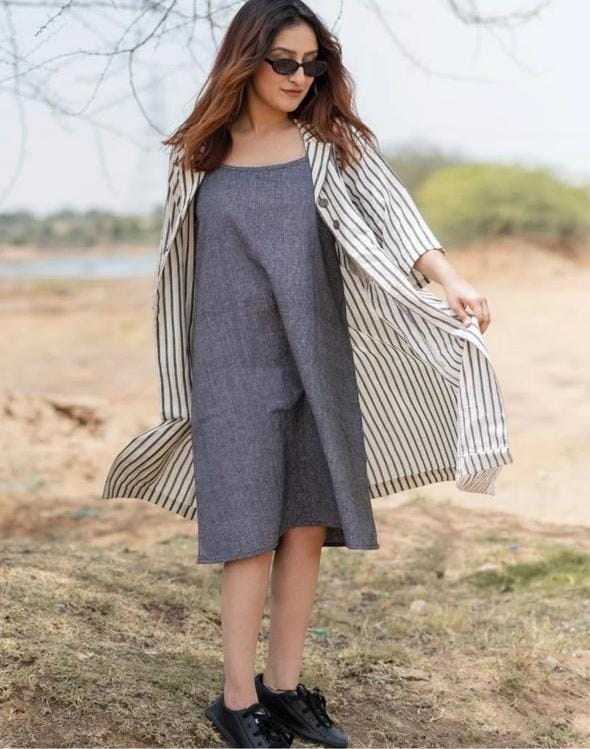

.jpg)
Rayon 42"
Handcrafted Pink Floral Rayon Kurta
₹279
MRP ₹499
Sizes: XS · S · M · L · XL · XXL
Sampled directly from authentic dyed fabrics (indigo, madder rose, brass, unbleached cotton). No gradients, no unbacked pills.
Every garment is tailored with generous seam margins in breathable pure cotton and soft rayon. Hand-embroidered yokes, deep pockets, and exact bust measurements for an honest fit.
Derived from the unprinted selvedge border of Indian textile bolts where artisan dyers stamp color registration marks. Used structurally as swatch selectors, route progress, and section dividers without relying on animations.

Test touch feedback. Radius: 10px controls, 20px sheets, 2px media. No generic box-shadows.
Image translateY(12px) to 0, internal scale 1.04 to 1.

Display text line rises from masked overflow container.
Instant tactile feedback on touch/active state (0.985 scale).
Strict architectural test against the 5 second-wave AI styling archetypes identified in Section 5.4.
| Second-Wave AI Cluster | Cluster Characteristics | Eskort Creations Architecture | Verdict |
|---|---|---|---|
| 1. Cream & Terracotta | #F4F1EA background + high-contrast serif + #D97757 terracotta accent | Textile-derived bone linen (#FAF8F5) with madder rose (#943843) and antique brass (#A67C38) | PASSED |
| 2. Dark Neon | #0A0A0A black with harsh electric/acid neon buttons | Charcoal nightstand canvas (#121316) with warm lamp luminescence and soft madder tones | PASSED |
| 3. Hairline Broadsheet | Excessive fine borders, multi-column editorial density, hairline dividers | Quiet whitespace; borders appear only where separating actual tabular measurements | PASSED |
| 4. Rounded Card Kit | Uniform cards in identical 3-up rows with single radius & box-shadow | Section Variety Table: 7 moments with 7 distinct layout primitives; zero card chrome | PASSED |
| 5. Template Chrome | Tracked all-caps eyebrows, A·B·C meta, monospace pills, → arrows | Eliminated entirely by scripts/slop-scan.mjs and design-direction rule | PASSED |
Aesthetic: Tactile, honest, artisan-rooted. Features print-colour registration dots, selvedge dashed dividers, and woven care label styling.
Aesthetic: Night theme as identity. Warm lamp at 3 a.m. for mothers and night shoppers. Deep charcoal and midnight tones.
Aesthetic: Pure editorial restraint. Almost no graphic ornament. Maximum whitespace and focus on garment drape and authentic photos.
Rationale: Direction A ("Selvedge") anchors Eskort Creations in tangible textile authenticity. By deriving the signature element from authentic print-color registration dots, the brand stands completely apart from generic AI e-commerce templates while retaining instant 60fps responsiveness. Paired with Direction B's calm "Nightstand" theme via `prefers-color-scheme`, it delivers the ideal nocturnal experience for new mothers and late-night shoppers across India.